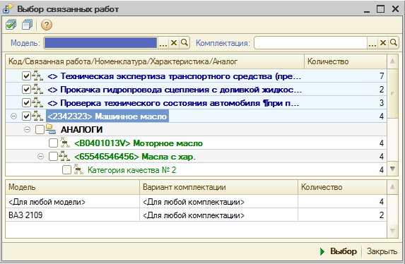

- В группе Запрашивать есть два флажка: Цена и Количество. Если оба флажка сняты, то при выборе работы, она (работа) добавится в документ с количеством=1 и ценой которая установлена для типа цен, указанного в документе. Если хотя бы один из флажков установлен, то при выборе работы будет открыта форма Ввод цены и количества в которой можно ввести количество и цену работ.
В верхней части формы расположено дерево групп справочника автоработы и настройка отборов.
- На закладке Дерево расположено дерево групп справочника автоработы. Дерево недоступно, когда установлен какой-либо отбор.
- На закладке Отбор расположено поле для поиска авторабот, а также таблица фильтров для наложения дополнительных отборов на список авторабот.
- Кнопка "Отключить отбор". Служит для отключения отбора в списке, полученного в результате поиска или наложения фильтров
- Кнопка "Настройка полей поиска". Служит для указания перечня полей, по которым производится поиск. В форме настройки полей поиска обязательно должно быть выбрано хотя бы одно поле.
